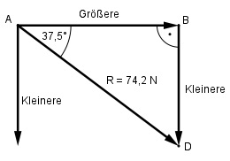

Aufgabe 111 Die Kraft R = 74,2 N soll so in 2 Teilkräfte zerlegt werden, dass R einen Winkel von 37,5° zu einer der senkrecht aufeinander stehenden Teilkräfte bildet. Wie groß sind die Teilkräfte?

Im Dreieck ADB: Kleinere sin 37,5° = ---------- |*R R Kleinere = R*sin 37,5° = 74,2 N * 0,6088 = 45,2 N Größere cos 37,5° = ---------- |*R R Größere = R * cos 37,5° = 74,2 N * 0,7934 = 58,9 N